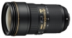

器材库 > 35mm画幅AF变焦镜头 > AF-S 24-70mm f/2.8E ED VR

详细规格
镜头类型
标准变焦镜头
发布日期
2015-08-05
厂家推荐价格
2,399.00 （美元）
焦距
24-70mm
最大光圈
F2.8
最小光圈
F22
镜头结构
20片/16组
非球面镜片
1枚非球面ED镜片，3枚非球面镜片片
低/超低色散镜片
2枚ED镜片，1枚非球面ED镜片片
光圈叶片
9（圆形）片
最近对焦距离
35-50mm焦距：约0.38m 24、28和70mm焦距：约0.41m （至焦平面）cm
驱动马达
SWM（宁静波动马达）
滤镜口径
82mm
防抖
是
颜色
黑/黑色
尺寸
最大直径约88.0 x 154.5（当镜头收回时距相机镜头卡口的距离）mm
重量
约1070g
喜欢小麦穗2018-01-07 06:062.92 分
操作性 4.50耐用性 3.50性价比 2.50解像力 5.00色彩还原 0.50机械结构 1.50
匿名网友2017-12-07 20:254.5 分
操作性 4.00耐用性 5.00性价比 3.00解像力 5.00色彩还原 5.00机械结构 5.00
三影2016-03-23 22:114.75 分
操作性 5.00耐用性 5.00性价比 4.50解像力 5.00色彩还原 4.50机械结构 4.50